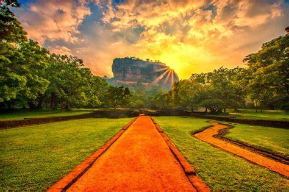
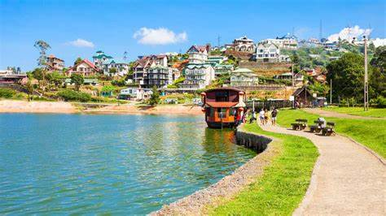

Top Destinations

Sigiriya Rock Fortress
An ancient wonder with stunning views and rich history.

Ella
A scenic town known for tea plantations and Ella Rock hikes.

Galle Fort
A UNESCO World Heritage Site with colonial charm and history.

Nuwara Eliya
Known as 'Little England,' famous for tea estates and cool weather.